Depuis la ville touristique d'Ushuaia et surtout depuis la ville de Puerto Williams encore plus au sud, nous remontons vers le Nord le long de la côte atlantique jusqu'à Rio Gallegos, puis rentrons dans les terres afin de nous approcher des Andes et de notre prochaine mission qui aura lieu de l'autre côté, au Chili.
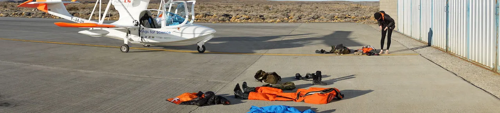
Alors que nous nous reposons dans la ville de Calafate, porte d'entrée vers les expéditions touristiques vers les Andes et le célèbre glacier Perito Moreno, nous sommes contactés par la radio locale (Radio Ahora Calafate) qui a entendu parler de nous et veut nous inviter à son émission en direct ! Nous nous y rendons donc, et armés de notre meilleur espagnol nous expliquons notre action mais précisons que nous n'avons pas de projet dans sa ville.
A l'instant où nous rendons l'antenne, le producteur nous fait signe : un scientifique lui a téléphoné durant l'émission et tient absolument à nous rencontrer, lui aussi ! Qu'à cela ne tienne, nous le retrouvons au Centre d'interprétation des glaciers de Patagonie.
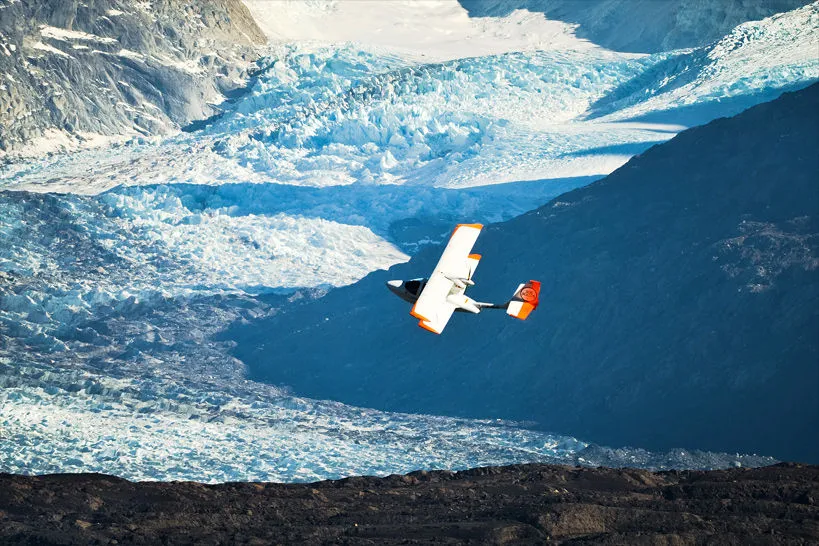
Le glacier Upsala et le tsunami
Pedro et Luciano nous présentent le contexte : à l'inverse du glacier Perito Moreno qui se laisse admirer par des milliers de touristes chaque année, le glacier Upsala est quant à lui interdit de visite car situé dans la réserve naturelle de Los Glaciares. Le seul moyen de l'apercevoir est de rejoindre par bateau la luxueuse estancia (auberge) Cristina, installée à près d'une heure de marche du glacier.
L'intérêt scientifique du glacier Upsala ? Il est connu pour le recul de son front glacier impressionnant : en 70 ans, 12 km de glace se sont fissurés puis effondrés, les débris de ce glacier tombant dans l'eau en morceaux plus ou moins gros -- les icebergs --, et s'éloignant en flottant doucement, jusqu'à finalement fondre à mesure qu'ils rejoignaient des températures plus chaudes.
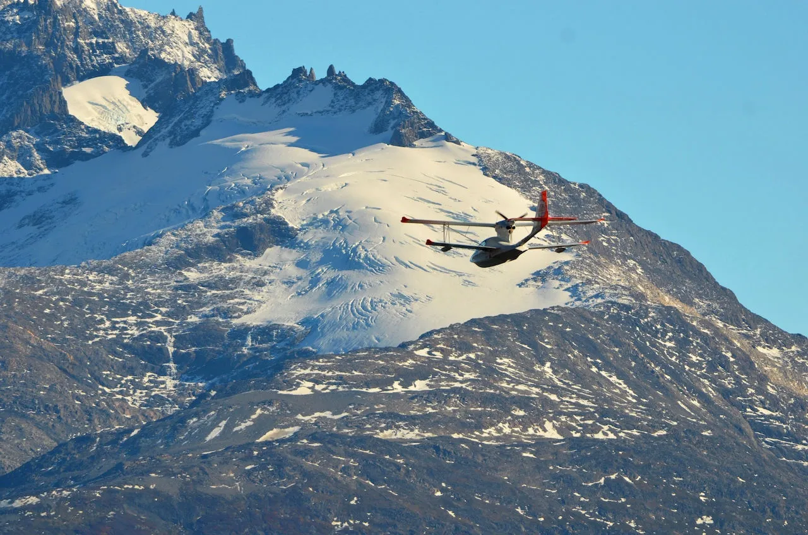
Or ce recul impressionnant -- comme le recul de tous les glaciers du monde -- entraine plusieurs conséquences que les scientifiques ne parviennent pas encore à anticiper correctement. L'Upsala est en effet encadré par deux montagnes, et lorsque la glace s'est retirée les deux pans de montagnes se sont retrouvés "à nu" : plus maintenus par la glace, ils se sont retrouvés à l'air libre. Une partie de la montagne à l'ouest ne l'a pas supporté, et en février 2013 un pan entier s'est effondré ; le glissement de terrain fut tel qu'il a entrainé un tsunami de plus de 15 mètres ! Heureusement il n'y eut aucun blessé, car il n'y avait personne dans ce parc naturel protégé.
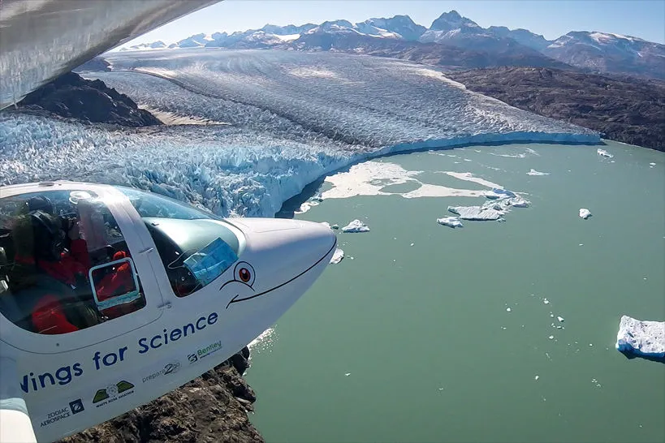
Pourtant ce glissement de terrain est inquiétant, c'est pourquoi Pedro Skvarca nous propose de réaliser un DEM - Digital Elevation Model, ou modèle tridimensionnel de terrain - de la partie restante de cette montagne effondrée ainsi que des environs du glacier, afin de pouvoir prévoir les futurs glissements de terrain en comprenant ce qui s'est exactement passé à l'abri des regards, en février 2013. Bien sûr, nous acceptons !
Sauf que pour ce faire, il nous faut obtenir une autorisation de survol par le responsable des parcs naturels. Pour une fois, nous avons pu admirer les talents de persuasion des glaciologues : en quelques heures, l'autorisation - à l'origine impossible - était obtenue !
Cinq heures de vol au-dessus du glacier
Nous pouvons maintenant préparer le survol. Vue la surface à modéliser, nous prévoyons cinq heures de vol. Afin de rejoindre la zone et d'en revenir, nous prévoyons une base à mi-distance à l'estancia Cristina, à deux heures de vol de l'aéroport. Au total, deux bonnes journées de travail donc !
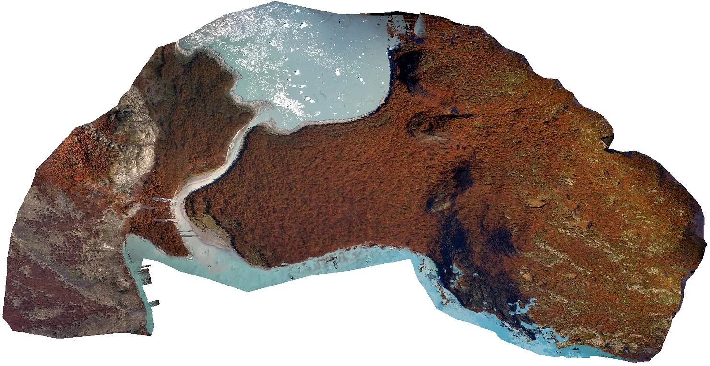
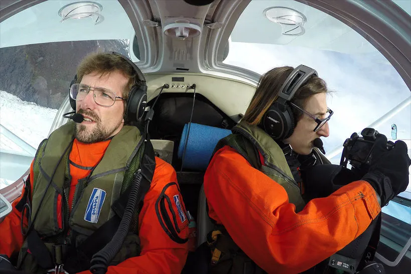
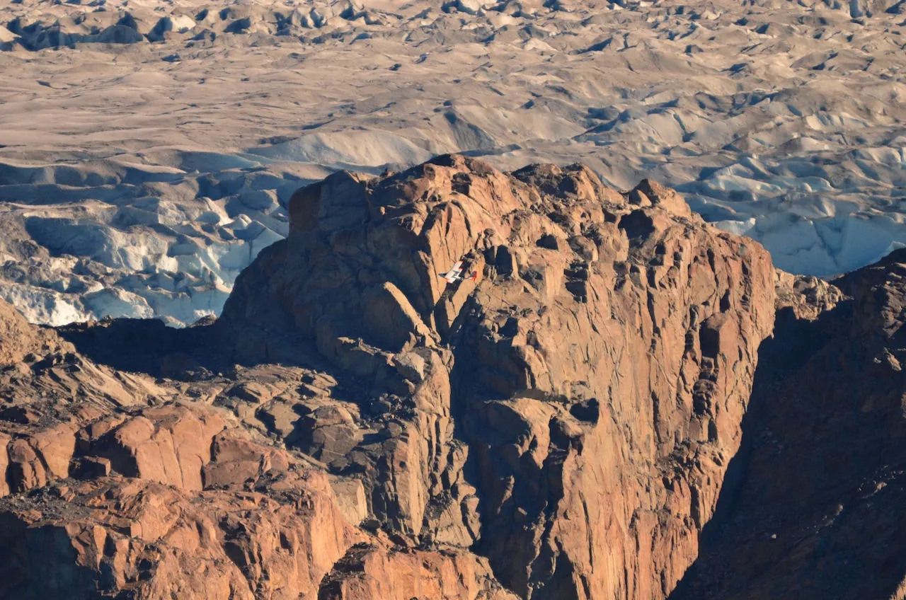
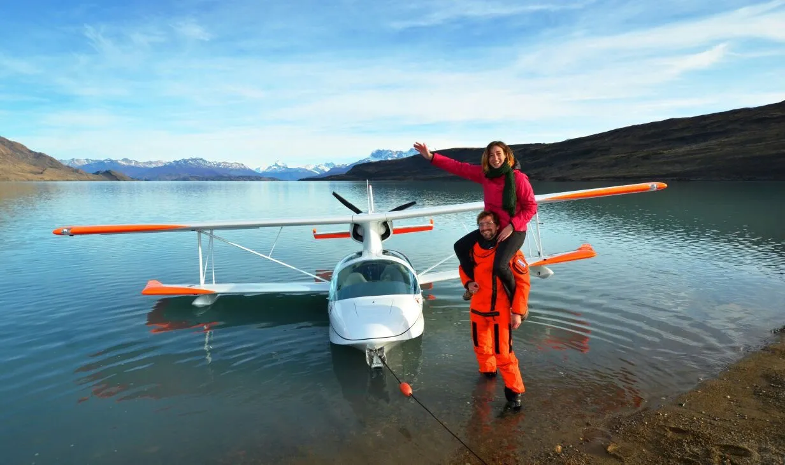
Il faudra encore quelques semaines, voire quelques mois, avant que le modèle 3D définitif ne soit construit à partir des milliers de photos géolocalisées : le travail est loin d'être fini. Mais nous pouvons tout de même vous présenter un premier travail préliminaire, pour lequel nous sommes appuyés sur notre partenaire Bentley Systems.
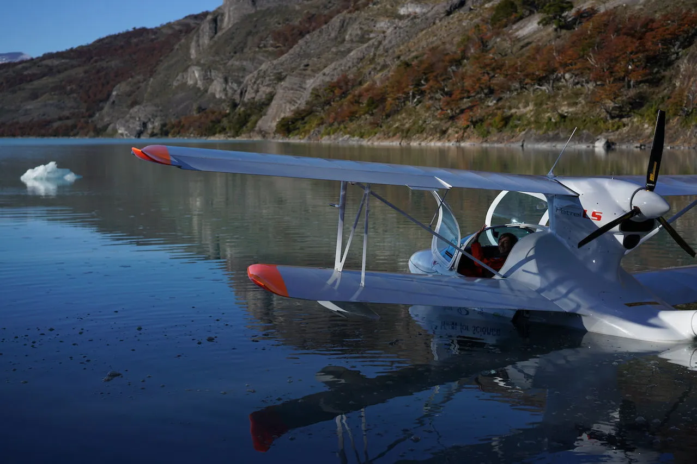
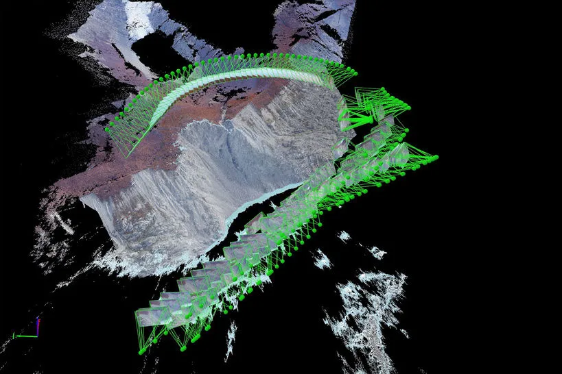
Retour à Calafate, épuisés et trempés ! Et pour le plaisir, la photo d'un petit coeur caché entre les montagnes -- l'amour est partout !
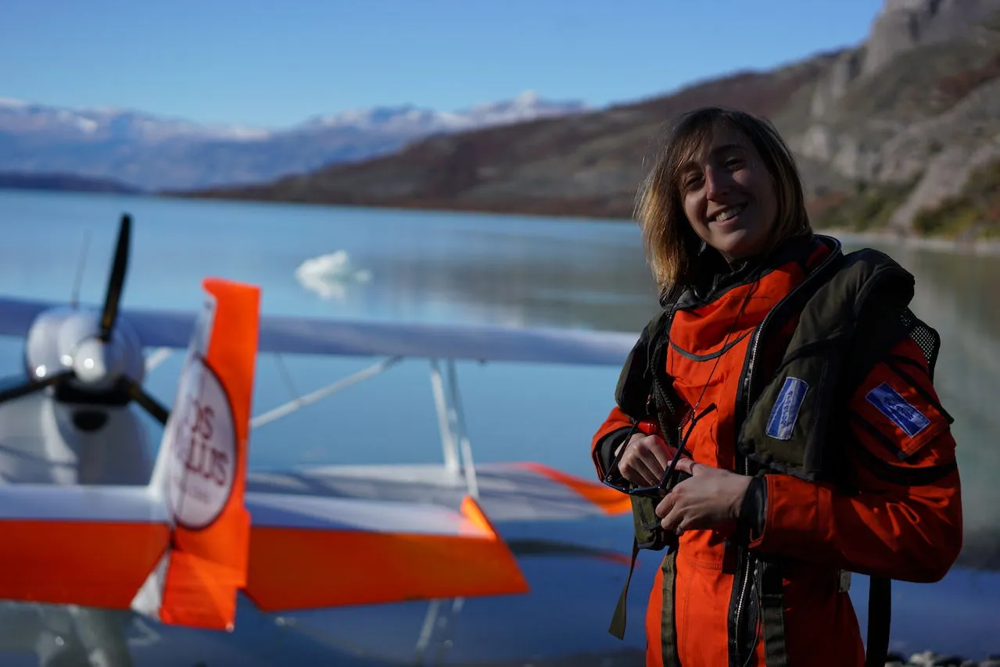
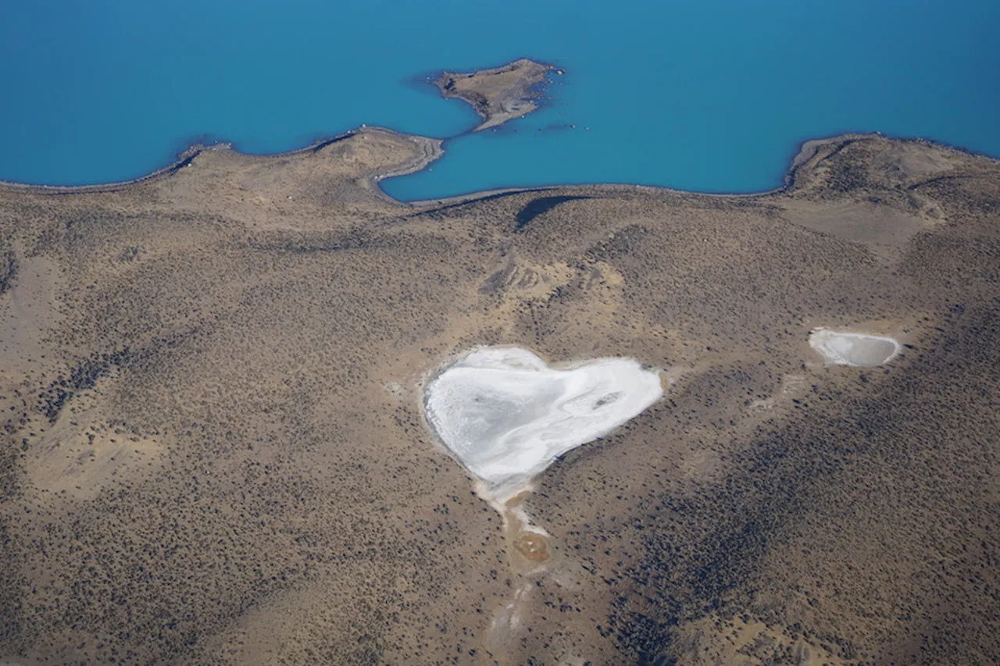
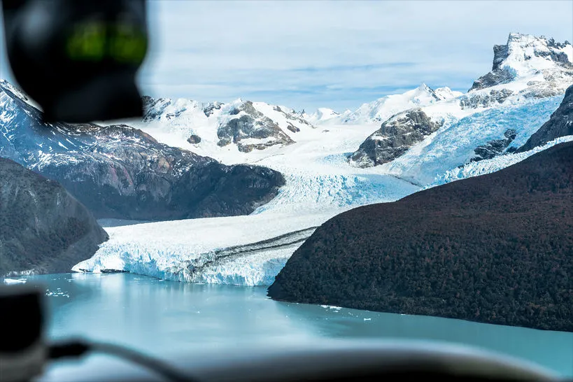
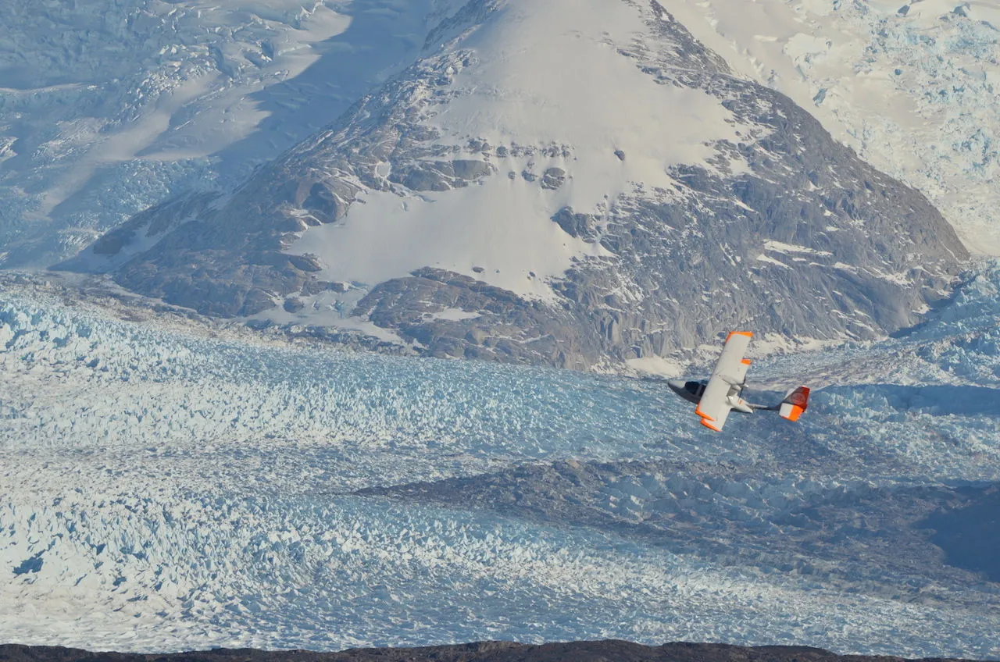